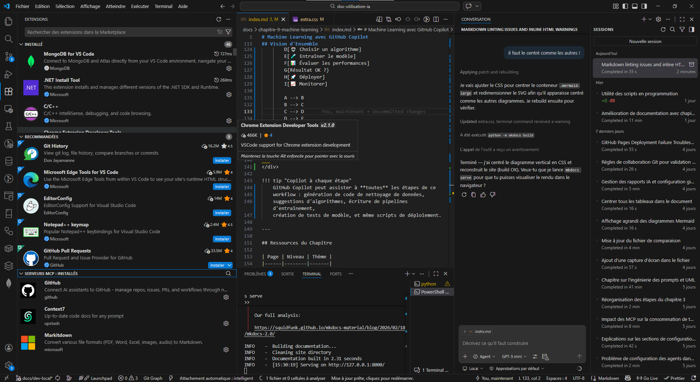
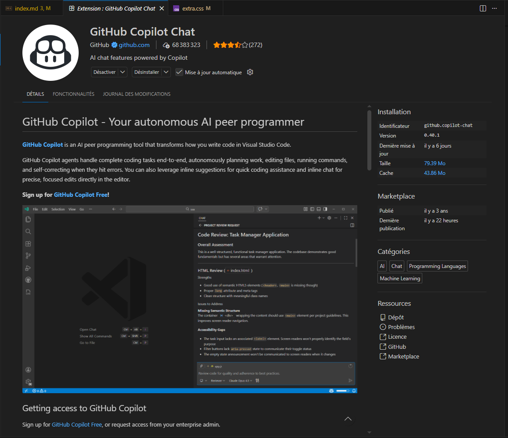
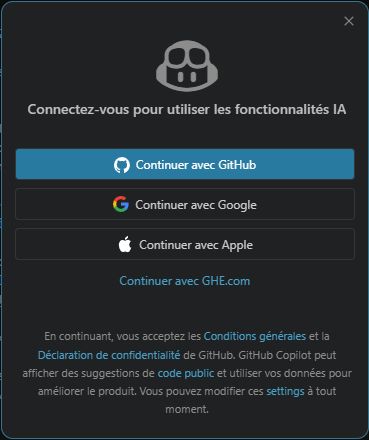
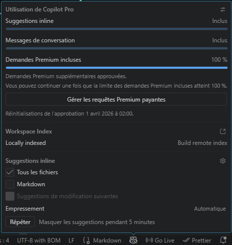
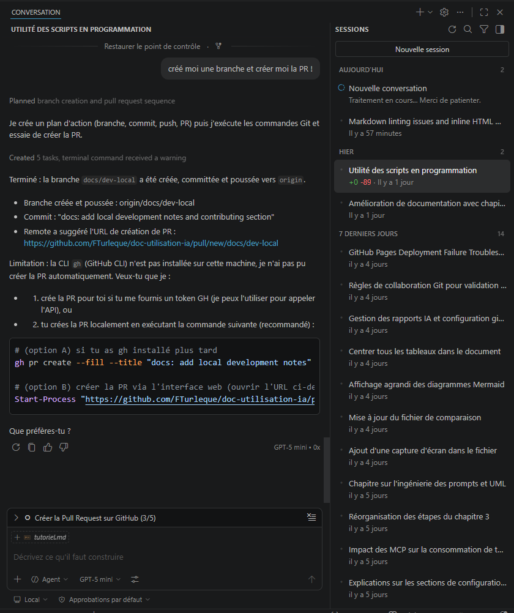

Tutoriel — Installer GitHub Copilot sur Visual Studio Code¶
VS Code Débutant
Présentation¶
Ce tutoriel vous guide pas à pas pour installer et configurer GitHub Copilot sur Visual Studio Code. Durée estimée : 5 minutes.
GitHub Copilot vous permet de :
- Recevoir des suggestions de code en temps réel
- Poser des questions en langage naturel via le chat
- Automatiser la génération de tests et de documentation
- Déboguer votre code plus rapidement
Prérequis¶
Avant de commencer, vérifiez les prérequis :
- [ ] Visual Studio Code 1.85+ (version en date de mars 2026 recommandée)
- [ ] Compte GitHub actif avec authentification
- [ ] Accès à Copilot (Free, Pro, ou via votre organisation)
- [ ] Connexion internet (authentification OAuth)
Vérifiez la version VS Code : Help → About ou Ctrl+Shift+P → tapez "About"
Version insuffisante ?
Si votre VS Code est antérieur à 1.85, mettez à jour via Help → Check for Updates ou téléchargez depuis code.visualstudio.com.
Étape 1 — Ouvrir le panneau Extensions¶
Ouvrez Visual Studio Code et accédez au panneau Extensions :
 Méthode 1 : Raccourci clavier¶
Méthode 1 : Raccourci clavier¶
- Windows/Linux : Ctrl+Shift+X
- macOS : Cmd+Shift+X
Méthode 2 : Barre latérale gauche¶
- Cliquez l'icône Extensions (quatre petits carrés)

Méthode 3 : Menu¶
View → Extensions
Vous verrez:
Une barre de recherche avec "Search Extensions in Marketplace" en haut du panneau.
Étape 2 — Installer GitHub Copilot¶
Étapes d'installation¶
- Tapez
GitHub Copilotdans la barre de recherche du panneau Extensions - Le premier résultat doit être l'extension officielle publiée par GitHub (avec un badge de vérification ✓)
- Vérifiez l'identifiant exact :
GitHub.copilot - Cliquez le bouton vert Install

Sécurité — Vérification importante
Installez UNIQUEMENT l'extension publiée par GitHub (l'organisation autorisée). Plusieurs extensions imitatrices existent — ignorez-les. L'identifiant correct est GitHub.copilot, pas d'autres variantes.
Après l'installation, l'extension démarre. Vous verrez un message :
- "GitHub Copilot installed successfully" dans la palette de commandes
- Ou une notification pop-up vous demandant de vous connecter
Étape 3 — Installer GitHub Copilot Chat (optionnel mais recommandé)¶
L'interface chat n'est pas incluse automatiquement. Installez-la pour utiliser :
- Chat conversationnel
- Slash commands (
/explain,/tests,/doc) -
Contexte enrichi (
@workspace,@project) -
Tapez
GitHub Copilot Chatdans les Extensions - Cliquez Install sur l'extension officielle de GitHub
- L'extension installée, VS Code demande de recharger
Installation groupée (VS Code 1.90+)
Les versions récentes de VS Code peuvent proposer une installation groupée : cliquez pour installer Copilot + Chat d'un coup.
Étape 4 — Authentification avec GitHub¶
Après installation, authentifiez-vous :
Cas 1 : Notification automatique¶
- Une pop-up apparaît en bas à droite : "Sign in to use GitHub Copilot"
- Cliquez "Sign in to GitHub" ou "Sign in with GitHub"
Cas 2 : Authentification manuelle¶
- Windows/Linux : Ctrl+Shift+P →
GitHub Copilot: Sign In - macOS : Cmd+Shift+P →
GitHub Copilot: Sign In

Processus de connexion¶
- VS Code ouvre votre navigateur sur GitHub
- Si non connecté, connectez-vous avec vos identifiants GitHub
- GitHub affiche une page d'autorisation : "Visual Studio Code wants to access your account"
- Cliquez Authorize Visual-Studio-Code
- VS Code affiche : "GitHub Copilot authentication successful"
- Le navigateur vous redirige, VS Code recharge automatiquement
Connexion bloquée ?
- Vérifiez que l'authentification 2FA est activée sur votre compte GitHub
- Certains réseaux d'entreprise bloquent OAuth → contactez votre IT
- Essayez "GitHub Copilot: Sign Out" puis réessayez
Vérification rapide¶
- Regardez la barre de statut en bas à droite de VS Code
- Vous devez voir l'icône Copilot (ressemble à un éclair ou logo Copilot)
- Vert ou sans point rouge = actif ✅

Test rapide du fonctionnement¶
- Créez un nouveau fichier : File → New File
- Tapez un langage :
// TypeScriptou# Python - Appuyez Enter et tapez :
function hello(ou autre début) - Attendez 1-2 secondes → Copilot affiche une suggestion grise
- Appuyez Tab pour accepter, ou Esc pour rejeter
Exemple: vous tapez
Copilot suggère (en gris) :
Appuyer Tab accepte la suggestion entière. Alt+Right accepte mot par mot.
Votre première interaction avec Copilot Chat¶
Ouvrir Copilot Chat¶
- Windows/Linux : Ctrl+Alt+I
- macOS : Cmd+Alt+I
Première question¶
- Le panneau Chat s'ouvre à droite

- Tapez une question simple :
- Copilot répond avec explication + exemples de code
Raccourcis Chat disponibles¶
- Ouvrir Chat : Ctrl+Alt+I
- Inline Chat (dans l'éditeur) : Ctrl+I — modifier du code sélectionné
- Quick Chat (fenêtre flottante) : Ctrl+Shift+I
Prochaines étapes¶
Vous avez installé Copilot ! Explor ensuite :
1. Découvrir les raccourcis (5 min)¶
→ Guide Référence — Raccourcis complets
Apprenez :
- Accepter suggestions (Tab, Alt+Right)
- Naviguer entre suggestions (++alt+bracket-left/right++)
- Déclencher manuellement (Alt+\)
2. Personnaliser vos préférences (10 min)¶
Configurez :
- Auto-suggestions (mode manuel vs auto)
- Langages autorisés
- Raccourcis clavier personnalisés
3. Apprendre les best practices (15 min)¶
Maîtrisez :
- Quand utiliser suggestions inline vs chat
- Prompt engineering basique
- Validation du code suggéré
- Sécurité et bonnes pratiques
4. Explorer les agents et personnalisation (20+ min)¶
Avancé :
- Custom instructions (
.github/copilot-instructions.md) - Agents autonomes
- Copilot Edits (modification multi-fichiers)
Foire aux questions¶
Q : Comment désactiver temporairement Copilot ?
A : Cliquez l'icône Copilot dans la barre de statut (bas VS Code) → "Disable Globally" ou "Disable for [Langage]"
Q : Copilot ne suggère rien. Qu'est-ce qui ne va pas ?
A : Vérifiez :
- [ ] Extension GitHub Copilot installée (
GitHub.copilot) - [ ] Vous êtes authentifié (icône Copilot visible en bas)
- [ ] Les suggestions auto sont activées (settings)
- [ ] Vous êtes connecté à Internet
Q : Je vois une erreur d'authentification. Que faire ?
A :
- Ouvrez palette de commandes Ctrl+Shift+P
- Tapez
GitHub Copilot: Sign Out - Attendez 10 secondes
- Tapez
GitHub Copilot: Sign Inet reconnectez-vous
Q : Copilot suggère du code dangereux / mauvaise qualité ?
A : C'est normal — vous êtes responsable de vérifier chaque suggestion. Lisez la section Best Practices pour apprendre à valider.
Prochaine étape¶
Guide Référence — GitHub Copilot sur VS Code : documentation complète avec tous les raccourcis, paramétrages avancés, MCP, et fonctionnalités de Copilot sur VS Code.
Concepts clés couverts :
- Raccourcis clavier complets — accepter suggestions, naviguer, chat, inline chat
- Paramétrages avancés — modèles, tokens, MCP, authentification
- Model Context Protocol (MCP) — enrichir Copilot avec des serveurs externes (Context7, GitHub, Playwright, etc.)
- Extensions recommandées — GitHub Copilot Chat, GitLens, Error Lens, et autres